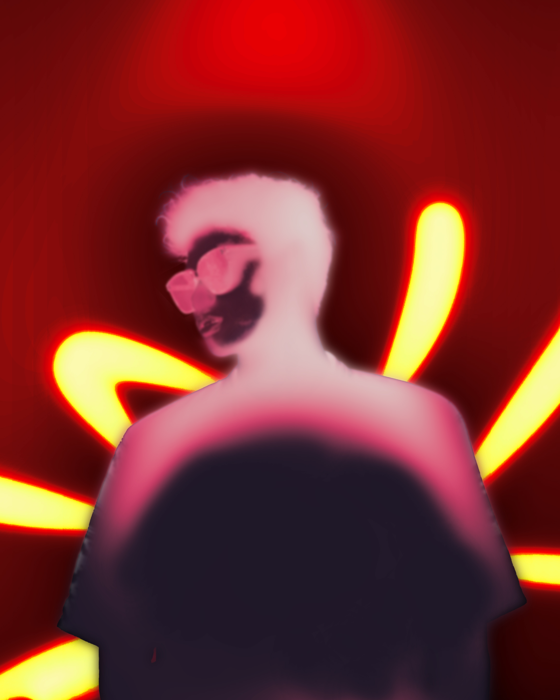

Tentang SayaHalo, saya Derriel Mulya Ramadhan, mahasiswa Sistem Informasi di Fakultas Matematika dan Ilmu Pengetahuan Alam, Universitas Tanjungpura. Saya memiliki ketertarikan pada bidang Graphic Design, Motion Graphics, dan Data Analysis. Saya juga tertarik mempelajari bagaimana teknologi dapat digunakan untuk membuat sistem yang bermanfaat. Data Diri
Grafik DesainKoleksi "Nocturnal Echoes"Sebuah kumpulan eksplorasi seni digital yang berfokus pada estetika gelap, cahaya neon, dan distorsi emosional. Koleksi ini menggabungkan teknik fotomanipulasi dan grafis generatif untuk menciptakan atmosfer yang moody dan surealis. 


 Portofolio Lengkap : drl.arc.portfolio.com Minat
|
|